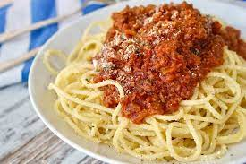

Spaghetti

Description
This is the recipe for making the traditional spaghetti dish. It is very simple and can be made very fast and effortlessly.
Ingredients
- A box of spaghetti
- A jar of marinara sauce
- 1-2 pounds of ground beef
- Salt
- Water
Steps
- Fill up a large pot with water and a handful of salt. Begin to boil the water.
- Take the meat out of the container and set it in a large pot. Put the pan on the stove and set the heat to medium.
- Mix the marinara sauce with the cooked meat. Take the jar of marinara sauce and pour all of it on the cooked meat.
- Once the water has come to a boil, throw the spaghetti in. It should cook for 7-11 minutes.
- Drain the noodles and then place the noodles in the sauce. Stir together very well and enjoy!